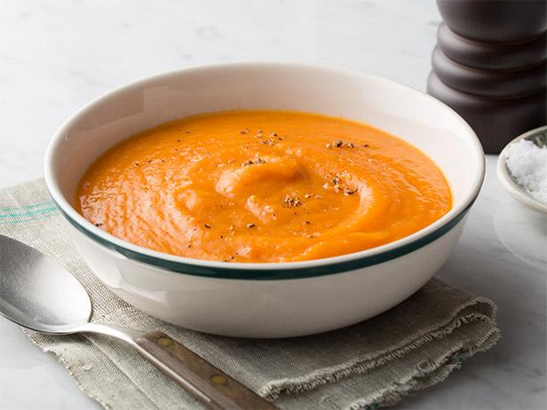

Butternut Squash Soup
A hearty bowl of butternut squash mended into the form of soup. Full of vegetables, this soup makes for the perfect nutritious winter meal.
Prep Time: 15 minutes
Cook Time: 30 minutes
Calories: 300 calories per bowl
Ingredients
- 5-6 cups of chopped butternut squash
- 2 medium peeled and diced potatoes
- 2 chopped carrots
- 1 sliced yellow onion
- 1 celery stock quartered
- salt and pepper to taste
- 3 tablespoons of olive oil
- 1 peeled and cored apple
- 5-6 cups of vegetable broth
Instructions
- Preheat oven to 425 degrees and line baking sheet wih parchment paper.
- Peel butternut squash, cut off the ends, cut in half and cut those halves in half.
- Scoop out seeds and dice butternut squash into chunks.
- Cut the rest of the veggies and add them to the sheet pan.
- Massage the rest of the veggies + diced apple with salt, pepper, and olive oil.
- Bake for 45-50 minutes.
- Take it out and add it to a big pot on the stove.
- Add vegetable broth and then transfer to a blender that will blend the veggies and broth together.